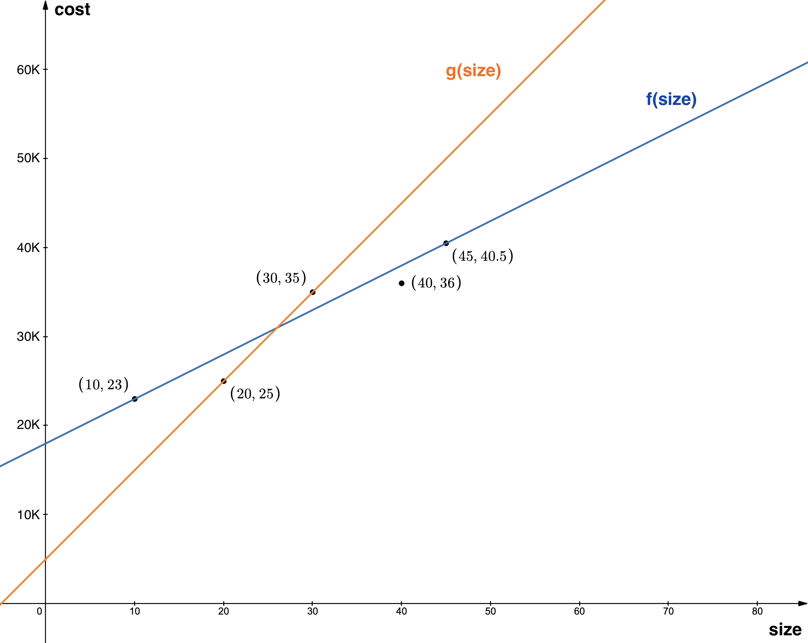
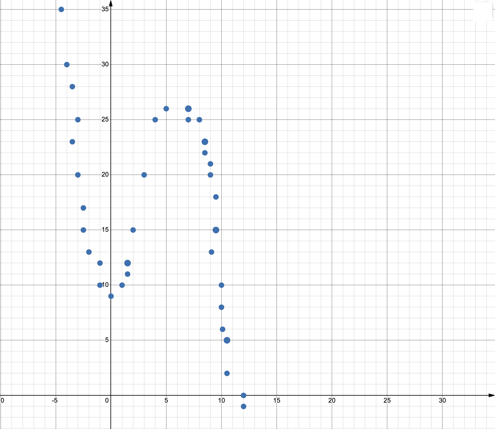
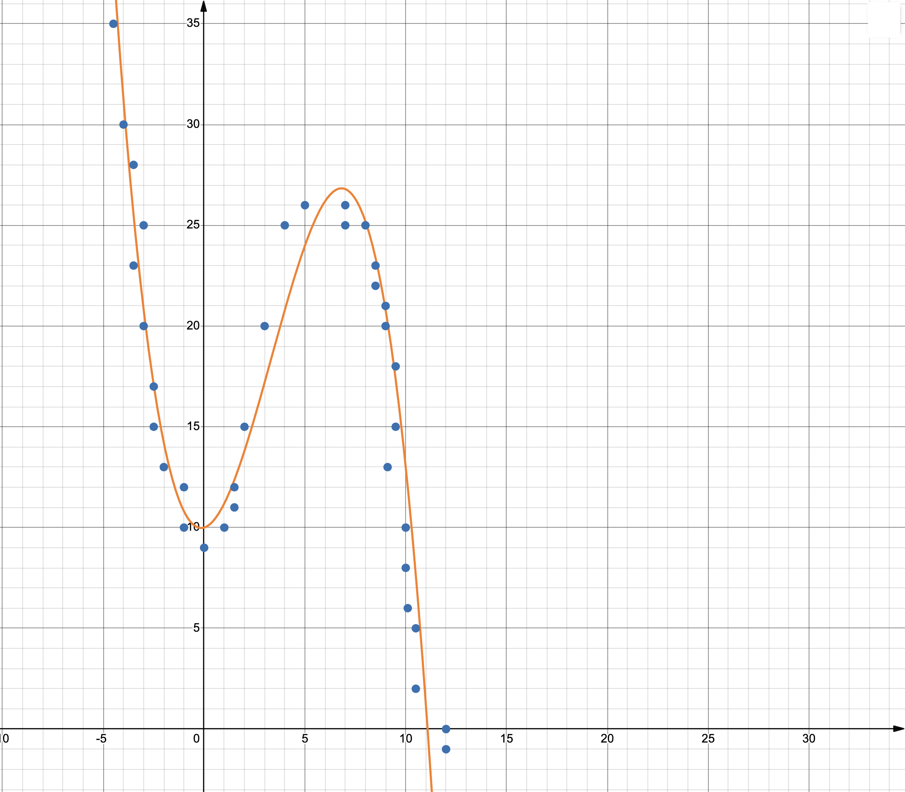

Modeling - Answers
- For the classification example (+ points and - points) from the lecture, what does the training loss measure?
- How well the line separates the datapoints
- Only count number of + points that are incorrectly classified
- Count number of - points that are correctly classified
- Number of + points that are incorrectly classified and - points that are incorrectly classified
Explanation: The training loss measure how well the line separates + points from - points, by calculating the number of + points that are incorrectly classified and number of - points that are incorrectly classified.
- Why using only number of mistakes to calculate the loss might not be enough in this example?
- Number of mistakes does not say anything about how good the line is
- Leaves ambiguity between lines that classify all points correctly
- Might want to have a separator that has largest distance from all points
- None of the above
Explanation: As was shown in the lecture, the line in second and third graphs both made no mistakes, so based on our loss they are both perfectly fine. However, this leaves ambiguity on which line is better, even though, intuitively, we would prefer third line because it has the biggest margin (empty space).

- For the above size vs cost of an apartment example, calculate the loss for the orange line g(size) satisfying the equation y = x+5 using the least squares loss.
Answer: 47.05.
Explanation: The formula for least squares loss is \(\varepsilon(f, \{(x_i, y_i)\}_{i=1}^N) := \frac{1}{N} \sum_{i=1}^N (f(x_i) - y_i)^2\). We have N = 5 data points: (10, 23),(20,25),(30,35),(40,36),(45,40.5). For these data points, the orange line predicts following outputs:
\(g(x_1) = g(10) = 10+5 = 15\),
\(g(x_2) = g(20) = 20+5 = 25\),
\(g(x_3) = g(30) = 30+5 = 35\),
\(g(x_4) = g(40) = 40+5 = 45\),
\(g(x_5) = g(45) = 45+5 = 50\).
Plugging these values in, we get \(\varepsilon(f, \{(x_i, y_i)\}_{i=1}^N) := \frac{1}{N} \sum_{i=1}^N (f(x_i) - y_i)^2 = \frac{1}{5} ((15-23)^2 + (25-25)^2 + (35-35)^2 + (45-36)^2 + (50-40.5)^2) = 47.05\)
- For the above size vs cost of an apartment example, calculate the loss for the blue line f(size) satisfying the equation y = 0.5x+18 using the least squares loss.
Answer: 3.4.
Explanation: Similarly to the previous problem, the formula for least squares loss is \(\varepsilon(f, \{(x_i, y_i)\}_{i=1}^N) := \frac{1}{N} \sum_{i=1}^N (f(x_i) - y_i)^2\). We have N = 5 data points: (10, 23),(20,25),(30,35),(40,36),(45,40.5). For these data points, the orange line predicts following outputs:
\(g(x_1) = f(10) = 0.5*10+18 = 23\),
\(g(x_2) = f(20) = 0.5*20+18 = 28\),
\(g(x_3) = f(30) = 0.5*30+18 = 33\),
\(g(x_4) = f(40) = 0.5*40+18 = 38\),
\(g(x_5) = f(45) = 0.5*45+18 = 40.5\).
Plugging these values in, we get \(\varepsilon(f, \{(x_i, y_i)\}_{i=1}^N) := \frac{1}{N} \sum_{i=1}^N (f(x_i) - y_i)^2 = \frac{1}{5} ((23-23)^2 + (28-25)^2 + (33-35)^2 + (38-36)^2 + (40.5-40.5)^2) = 3.4\).
Note: distinct loss for each line that is found
- If the goal is to find a line that minimizes the loss, which of the two lines would you prefer?
- Orange line because it has better fit
- Orange line because it has smaller loss
- Blue line because it passes through more points
- Blue line because it has smaller loss
Explanation: Blue has smaller loss 3.4 < 47.05, and is visually a better fit to the points we have.
Note: there is no way to fit a line exactly through all the points, but we still get a pretty small loss
- How does the type of loss function affect the resulting model behavior?
- Has no effect
- Depending on type of loss get different effects
- Always causes the best model to be found
- None of the above
Explanation: While the type of loss affects the resulting model behavior, we cannot guarantee that the best model will always be found as we will discuss in later classes.
- What are some considerations that need to be made when designing a loss function?
- The loss function should reward models that generalize better
- The loss function needs to penalize correct predictions
- The loss function should reward models resilient to noisy inputs
- The loss function should not penalize fairness
Explanation: We want the loss to penalize incorrect predictions. Other considerations are capturing whether model can make good predictions on unseen data, whether model works equally well across different subpopulations, whether model is resilient to noisy/unexpected input, and potentially how interpretable the model is.
- What are the differences between the train set, validation set, and test set?
- Test set is used with the loss to find best line
- Training set is used with the loss to find best line
- Validation set used to do pseudo-test for model generalization
- Test set used to evaluate the model generalization
Explanation: As discussed in lecture, training set is used to specify/find best parameters, based on specified loss. Validation set is then used to do a "fake" test on whether found model has potential to generalize (more on this in future lectures). Finally, Test set is used to do final evaluation of a model to test how well it generalizes to unseen data.
- What is the difference between parametric and nonparametric models?
- Parametric models make some assumptions about the data, and their complexity does not depend on the size of the training data
- Non-parametric models make no assumptions about the underlying data, and their complexity depends on the size of the training data
- Non-parametric models make some assumptions about the data, and their complexity depends on the size of the training data
- Parametric models make no assumptions about the underlying data, and their complexity does not depend on the size of the training data
Explanation:
Parametric models make some assumptions about the data. Given these assumptions, we find parameters for the model, and make future predictions using the found parameters. Because the number of parameters does not depend on data size, complexity of parametric models does not depend on the size of the training data.
Non-parametric models, on the other hand, make no assumptions about the underlying data, and complexity of these models depends on data size and nature of the data.

10. For the above dataset, which of the following shapes would be a good fit (describes the points the best)?- Line
- Quadratic function
- Cubic function
- None of the above
Explanation: The given datapoints most closely follow a cubic function as can be seen in the image below.

- In bias variance trade-off, what is the difference between bias and variance?
- Bias is error from over simplistic model
- Bias is error from a complex (over-sensitive) model
- Variance is error from over simplistic model
- Variance is error from a complex (over-sensitive) model
Explanation: Bias captures error from having a model that is too simplistic. Variance captures error from having a model that is overly complicated. We want to have a model that is neither too simple nor too complicated.
- In bias variance trade-off, what do we want to achieve?
- Maximal bias
- Maximal variance
- Minimal bias
- Minimal variance
Explanation: We want to achieve both minimal bias and variance, because we want a model that is simple enough to be interpretable but also complicated enough to actually perform well on a given task (more on this in future lectures).
- What is the main goal of representation learning?
- Transformation of features that makes it easy for downstream models to train
- Transformation of features that makes it hard for downstream models to train
- Transformation of features that makes it easy for downstream models to test
- Transformation of features that makes it hard for downstream models to test
Explanation: Representation learning tries to find a transformation of features that somehow captures the underlying information of the features and helps to make it easier for downstream models to train.